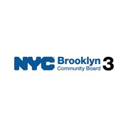
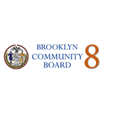
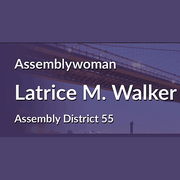
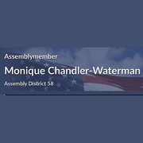
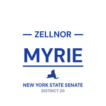
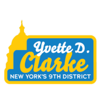

The district
 SubwayCiti BikeNYC Ferry
SubwayCiti BikeNYC FerryTurn layers on and off. Tap an official's logo or a board's seal for its page. Zoning and land use lot by lot are on the land use map.
About
Council Member Darlene Mealy represents City Council District 41. It sits in Brooklyn.
The district overlaps community boards Brooklyn 3, Brooklyn 8, Brooklyn 9, Brooklyn 16 and Brooklyn 17.
It is policed by the 67th, 71st, 73rd, 77th and 81st Precincts.
It overlaps Assembly districts 43, 55, 56 and 58 and Senate districts 19, 20 and 25.
First elected in 2005 and sworn in January 2006. Members of the City Council serve four year terms and are limited to two consecutive terms.
Next on the ballot in November 2029, when the seat will be open: Council Member Mealy is term limited and cannot run again. For the election in front of us, see where you vote in November 2026 or what is coming up on the calendar.
Council District 41 in numbers
The Census publishes no figures for council districts. These are the community districts Council District 41 covers.




U.S. Census Bureau, American Community Survey 2019-2023 5-year estimates.
Committees
Contact
Overlap
Community boards
Bars show how many of the district's election districts fall in each board.
Overlapping elected officials







| Brooklyn CB 16 | 45% of the council district | 69% of it |
| Brooklyn CB 17 | 25% of the council district | 21% of it |
| Brooklyn CB 3 | 15% of the council district | 15% of it |
| Brooklyn CB 8 | 8% of the council district | 14% of it |
| Brooklyn CB 9 | 6% of the council district | 11% of it |
| 73 Precinct | 45% of the council district | 69% of it |
| 67 Precinct | 25% of the council district | 21% of it |
| 81 Precinct | 15% of the council district | 35% of it |
| 77 Precinct | 8% of the council district | 15% of it |
| 71 Precinct | 6% of the council district | 11% of it |
| Sector 67C | 21% of the council district | 100% of it |
| Sector 73B | 19% of the council district | 100% of it |
| Sector 73D | 11% of the council district | 57% of it |
| Sector 73C | 10% of the council district | 66% of it |
| Sector 81D | 9% of the council district | 79% of it |
| Sector 77D | 8% of the council district | 57% of it |
| Sector 81B | 6% of the council district | 50% of it |
| Sector 73A | 6% of the council district | 44% of it |
| Sector 71D | 4% of the council district | 25% of it |
| Sector 67D | 4% of the council district | 11% of it |
| Sector 71B | 2% of the council district | 18% of it |
| School District 23 | 41% of the council district | 69% of it |
| School District 18 | 21% of the council district | 10% of it |
| School District 16 | 20% of the council district | 34% of it |
| School District 17 | 18% of the council district | 11% of it |
| Senate District 25 | 51% of the council district | 25% of it |
| Senate District 20 | 28% of the council district | 13% of it |
| Senate District 19 | 21% of the council district | 4% of it |
| Assembly District 55 | 62% of the council district | 71% of it |
| Assembly District 58 | 23% of the council district | 20% of it |
| Assembly District 56 | 10% of the council district | 12% of it |
| Assembly District 43 | 5% of the council district | 7% of it |